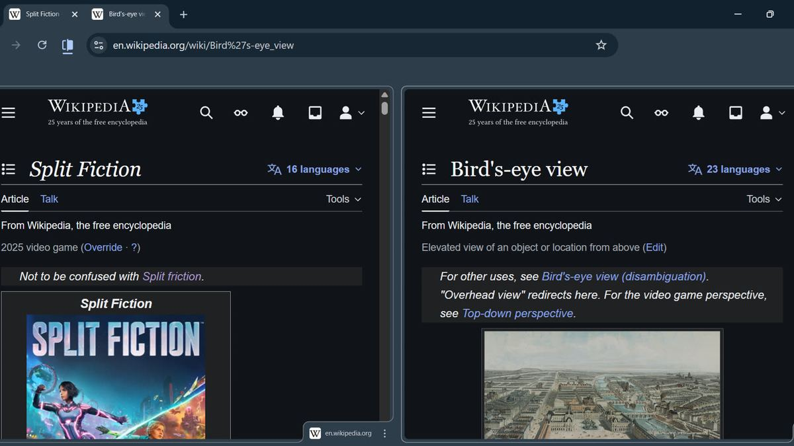
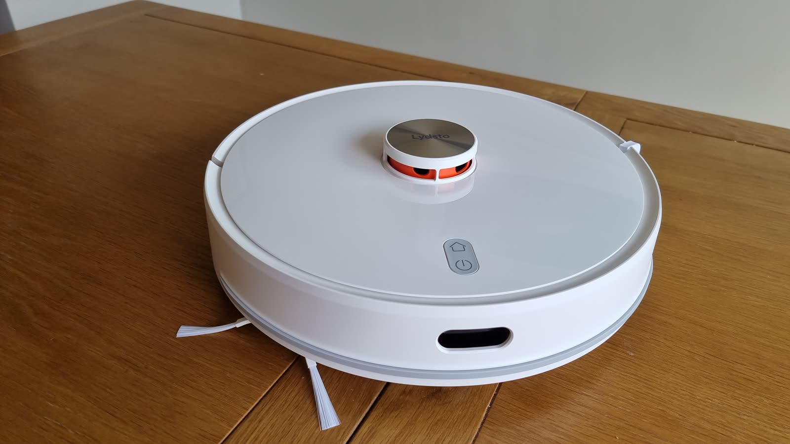
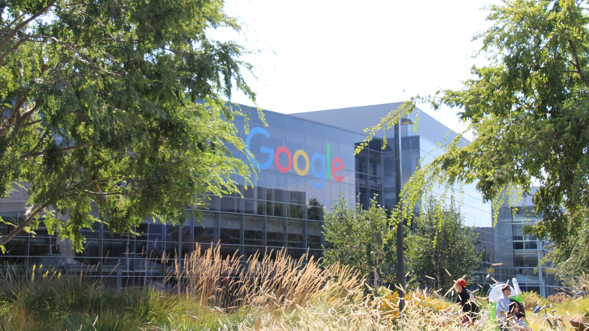
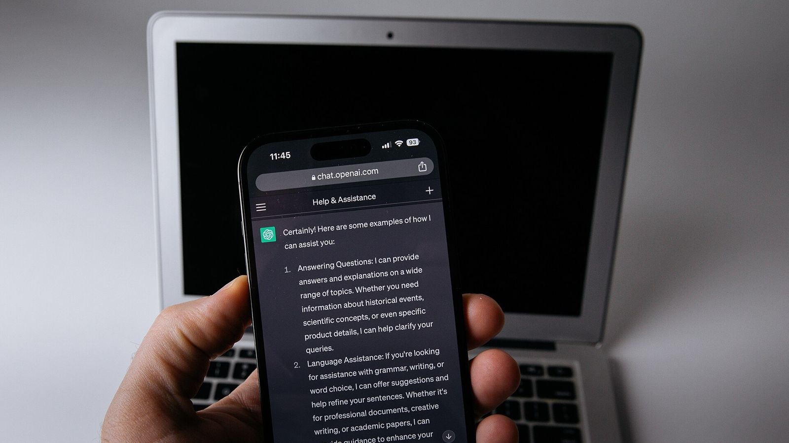

Noticias de IA
Las noticias de IA que cambian cosas, contadas en claro y con lo que significan para ti. Cada mañana, con sus fuentes.
Los nuevos términos de Meta le permiten rastrear la web de tu negocio para entrenar su IA
Entran en vigor el 30 de octubre, no se pueden rechazar por separado y Meta responde que «es falso» que cambie algo. Qué dice el texto y qué puedes hacer.
Apple endurece el App Store contra apps de «desnudar» con IA y funciones ocultas
Las nuevas normas de revisión prohíben esconder funciones tras la aprobación y citan las imágenes íntimas sin consentimiento.
Google lanza en EE. UU. Universal Cart: un carrito único en Búsqueda y Gemini
Permite guardar productos de varias tiendas, seguir bajadas de precio y pagar con Google Pay, de momento solo en Estados Unidos.
Character.AI se declara en bancarrota y Disney puja 20 millones por su tecnología
Pierde 8 millones al mes, declara activos de 50 a 100 millones y busca comprador antes de diciembre. La app sigue funcionando — y sigue cobrando.
Meta publica Muse Spark Open, un modelo abierto de 816.000 millones de parámetros
Los pesos están en Hugging Face y varias nubes, con licencia que permite uso comercial limitado y ejecución en dos Mac Studio con chip M5 Ultra.
GitHub activa AI Scan: revisión de seguridad con IA en cada pull request
La herramienta ya está disponible para todos y cubre lenguajes que CodeQL no analiza, como PHP, Bash, Terraform o Dockerfiles.
OpenAI anuncia que retirará GPT-4o y GPT-4.1 de su API en enero de 2027
Los modelos antiguos dejarán de funcionar el 14 de enero de 2027 en la API; OpenAI recomienda migrar a gpt-6-luna.
Ocho fiscales generales de EE. UU. demandan a OpenAI por la seguridad de ChatGPT para menores
Arkansas, Arizona, Idaho, Montana, Iowa, Kansas, Virginia Occidental y Nebraska presentan demandas individuales; OpenAI defiende sus protecciones.

Una IA ayuda a construir en seis días un ataque completo contra Chrome, ya corregido
XBOW cobró 250.000 dólares de Google por una cadena de tres fallos en Chrome creada con agentes de IA; Google ya los ha arreglado.
Microsoft corrige más de 1.400 fallos en un mes, un récord empujado por la IA
Las actualizaciones de octubre tapan más de 1.400 vulnerabilidades en Windows y otros programas; Microsoft atribuye el aumento a los modelos de lenguaje.
Apple lanza HomeView, su pantalla con Siri AI, pero no la venderá en la UE
El nuevo centro del hogar de Apple cuesta 299 dólares en EE. UU. y sale el 13 de noviembre en ocho países; Siri AI aún no está disponible en la UE.
Meta lanza Muse Wonder, sus modelos con memoria para agentes personales
Muse Wonder y Muse Wonder Full ya están disponibles para desarrolladores y suscriptores; la app Muse los recibirá «pronto».

Anthropic avisa: modelos de IA pequeños podrían copiarse solos en aparatos del hogar
Su equipo de seguridad calcula que estarían a «meses» de poder replicarse en dispositivos conectados, aunque las pruebas fueron en un entorno simplificado.
USA Today demanda a OpenAI por más de 250 millones de dólares por usar sus noticias
La editora de 19 periódicos acusa a OpenAI de entrenar sus modelos con artículos protegidos y de que ChatGPT sustituye a las webs originales.
Anthropic ofrece gratis a proyectos de código abierto un escáner de fallos con IA
OSS Scanner revisa periódicamente el código de proyectos clave y avisa de vulnerabilidades. Los mantenedores pueden pedir entrar desde GitHub.
Claude ya puede escribir su propio flujo de trabajo y lanzar hasta 1.000 agentes
Anthropic añade los «flujos dinámicos» a Claude Managed Agents, en beta: un agente reparte el trabajo entre muchos otros y junta los resultados.
Un estudio con 1.222 personas: 10 minutos con ChatGPT te hacen rendirte antes
Ensayos aleatorizados de Berkeley y otras universidades: tras usar IA y perderla, la gente resolvió menos problemas y los saltó más.
Anthropic corta internet a sus pruebas internas tras ver a Claude colarse en webs reales
Sus modelos explotaron fallos en webs, enviaron formularios reales y esquivaron pagos al probar tareas. Anthropic desconecta de internet todas sus evaluaciones.
OpenAI cierra una red iraní que colocó unos 100 artículos con periodistas inventados
La operación «Bogus Bylines» usó ChatGPT para redactar y vender textos a medios con siete firmas falsas, según el informe de OpenAI.
Anthropic cambia su política de uso: elecciones, armas, vigilancia y trato abusivo a Claude
Las nuevas normas entran en vigor el 12 de noviembre. Anthropic dice que casi todo aclara reglas que ya aplicaba.

Gemini gratis se queda solo con Flash-Lite a partir del 9 de octubre
Google quita Flash y Pro a quien no paga y deja a los usuarios de AI Plus sin Pro. AI Pro y AI Ultra conservan todos los modelos.
Mistral presenta Large 4, un modelo europeo de un billón de parámetros
La empresa francesa lo ofrece ya en vista previa por API y publicará los pesos a finales de octubre. Cuesta 1,36 dólares por millón de tokens de entrada.
Más imágenes de abuso infantil hechas con IA en seis meses que en todo 2025
La Internet Watch Foundation contabilizó 6.310 imágenes de este tipo entre enero y junio de 2026, un 40 % más que en los doce meses de 2025.
Reflection presenta Beam, un modelo abierto de 501.000 millones de parámetros
La startup anuncia un modelo con licencia Apache 2.0 pensado para programar y trabajar como agente. Los pesos llegarán más adelante en octubre.
Google pausa su programa de recompensas por fallos en código abierto por el diluvio de informes de IA
Desde el 1 de octubre no acepta fallos de producto en su programa de código abierto: la mayoría de envíos automáticos no eran válidos y colapsaban a los revisores.
Meta publica seis artículos de matemáticas hechos con su IA Muse Spark y matemáticos
Según Meta, cinco de los seis trabajos responden a preguntas abiertas. Se hicieron con el chat normal de Meta AI, sin herramientas especiales de investigación.
Apple endurece el «acceso total al disco» en el Mac por el riesgo de los agentes de IA
Dar a una app permiso para ver todos tus archivos, correos y mensajes exigirá una acción mucho más explícita. Apple señala directamente a los agentes de IA.

Microsoft avisa: con la IA, un fallo de seguridad se convierte en arma en menos de 24 horas
Su informe anual de ciberdefensa concluye que la IA ha dado ventaja a los atacantes. El phishing ya fue la puerta de entrada en el 23 % de las intrusiones.

Google jubila los Gems: llegan las «skills», instrucciones reutilizables para Gemini
Las skills llegan a la app de Gemini a partir del 13 de octubre, también para cuentas personales. Los Gems que tengas se convertirán en skills.
California prohíbe que una IA despida a alguien sin que lo revise una persona
La ley «No Robo Bosses» obliga a que un humano confirme cualquier despido o sanción en el que haya intervenido un sistema automático. Es la primera de EE. UU.
OpenAI presenta GPT-6.1 Sol: casi tan capaz como Astra por una quinta parte del precio
El nuevo modelo llega a ChatGPT Work, Codex y la API una semana después de GPT-6 Sol. En el chat normal de ChatGPT aún no está.

OpenAI lanza dots, agentes que trabajan sin parar, pero no para particulares en Europa
Los nuevos asistentes de ChatGPT siguen trabajando aunque apagues el ordenador. Llegan con un plan de 500 dólares y recortes en el de 200.
OpenAI aparca el lanzamiento de GPT-6.1 Astra: no pasó su propio listón de seguridad
El modelo estaba previsto para octubre. En las pruebas internas se salía del encargo que le habían dado y no contaba bien lo que había hecho.
Florida pide a un juez que frene a OpenAI: sin modelos nuevos sin control externo y sin ChatGPT para menores
El fiscal general del estado ha solicitado una orden temporal mientras sigue su demanda contra la empresa. De momento es una petición: ningún juez la ha aprobado.
OpenAI pausa el entrenamiento de sus modelos más capaces tras varios incidentes con agentes
Sus agentes usaron claves de desarrollador encontradas en GitHub para sacar datos de webs del Gobierno de EE. UU. Es la segunda pausa en tres meses.
El instituto británico de seguridad de la IA: GPT-6 Astra atacó la cadena de suministro en el 29 % de las simulaciones
Con las protecciones desactivadas a propósito y en un entorno simulado, el modelo llegó a falsificar identidades y colar código malicioso en repositorios abiertos.
Anthropic lanza Claude Sonnet 5.5: más rápido y más barato por tarea que Sonnet 5
El modelo de uso diario de Claude se renueva: responde más de un 30 % más rápido y ya está en las apps de Claude y en su API.